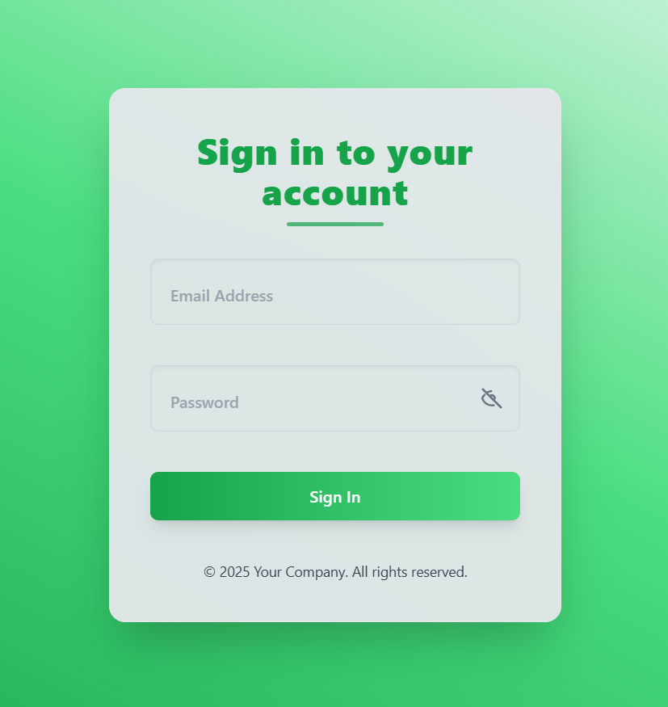
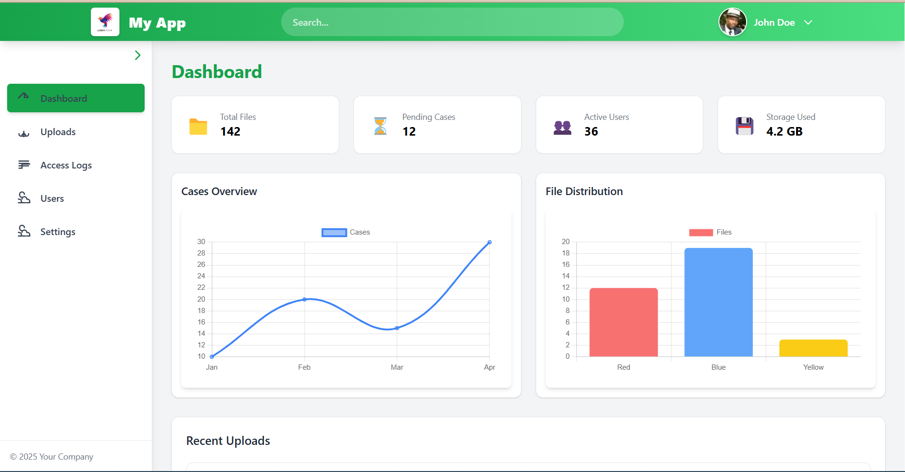
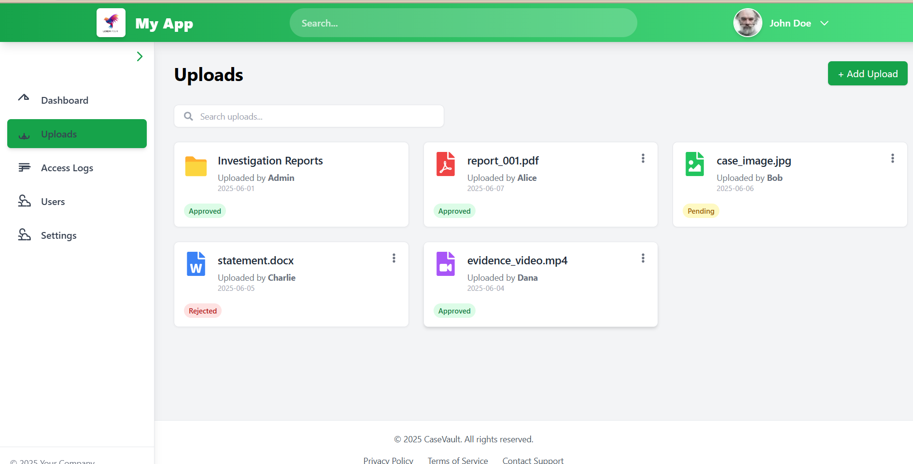
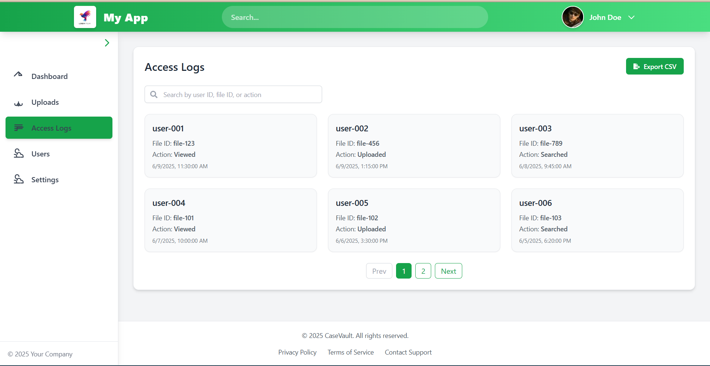
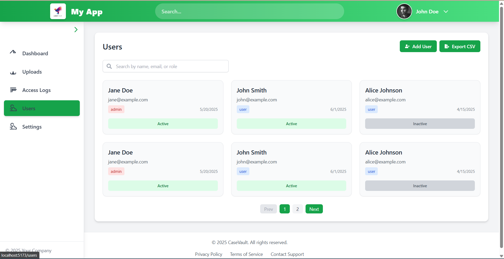
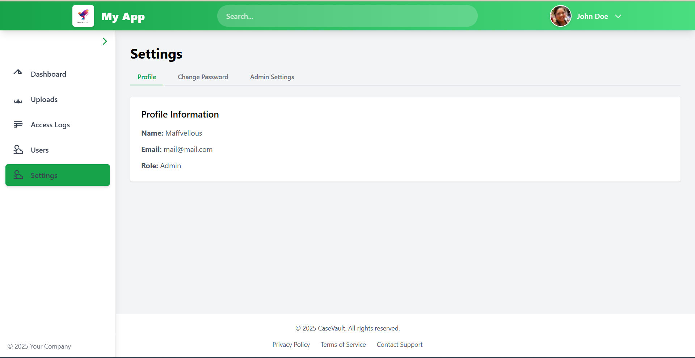

OVERVIEW
Dashboard metrics and charts establish the operational state.


Operational dashboards need to make file activity, access and user state easy to inspect without turning every screen into a dense reporting surface.
The supplied screens separate dashboard overview, uploads, access logs, user management and settings into distinct operating views.




This section translates the supplied interface into the sequence of responsibilities visible in the build record.
Dashboard metrics and charts establish the operational state.
Upload records are separated from access history so different jobs remain legible.
Users and access logs make the operational layer inspectable rather than invisible.
A build record that connects the visible interface to the job the product is trying to do.
These are the actual project images supplied for the archive. They are shown without fabricated performance claims or fake client outcomes.